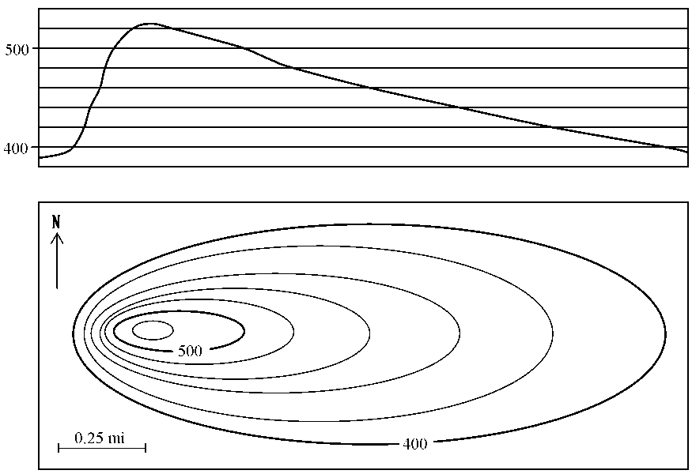

Documenting#
Now is the time to understand more, so we fear less.
—Marie Curie
Statechart based distributed systems do not stay put.
The statechart abstraction is very powerful for translating a set of technological goals into pictures, then into robust, working software. So as you change your designs, you won’t have to spend a lot of time updating your statechart diagrams.
Not everyone understands how to read a statechart diagram, or a set of them working together to describe a distributed system. A statechart diagram can describe all of the features working together at once. This is a bit much, even if you do know how to read them. So to explain a feature you will have to translate it into another set of diagrams; which in turn, will have to be explained with words.
But the smallest change in the design could wipe out pages and pages of this carefully written documentation. It might not be worth your time to write everything down.
I’ll explore this idea using a topographical map as an analogy. A topographical map describes the landscape from a bird’s eye view, where each contour line is drawn at a specific elevation. It was invented by the British mathematician, Charles Hutton in 1774. This was a huge innovation that not a lot of people know about.
To see what this landscape would look like while on the ground, you would need to make a topographical projection. To simplify our language a bit – we will call a topographical projection a projection.
The diagram below 1 demonstrates how to map a projection from a topographical map. In the bottom box of the picture, we see a topographical map of a volcano. In the top box we see it’s projection, or what it would look like while walking toward it from the south:
If you were to approach this same mountain from the west instead, you would need to make a new projection. In fact, you could make many many different projections of this one diagram, each describing a different directional approach to the same volcano.
Your statechart diagram is like a topographical map.
Both the statechart and a topographical map contain many many different stories and approaches. A specific feature of your statechart program is like a vantage point from the ground to our topographical map.
To see how a specific feature works, you could send it’s events to the instrumented software representing your statechart. Then you could use the output of this instrumentation to make another picture, a sequence diagram.
A sequence diagram is easy to understand, it is immediately intuitive; just like a projection. A projection is to a topographical map as a sequence diagram is to a statechart.

The volcano explodes 2. It has a new shape, which we have bravely surveyed so that we can re-draw our topographical map. But now every one of our meticulously derived projections needs to be re-drawn too, because every visual approach to the volcano will look different than it did before. Likewise, if you make a slight adjustment to your statechart, all of the sequence diagrams and their writings need to be re-drawn and re-written.
Let’s think about the utility of the projection. Anyone can understand it because this is what you see when you are walking around on the ground, it is based on innate cognition.
But the topographical map isn’t like the projection. It is something that is more abstract, like an analog clock – a child doesn’t implicitly know how to use it; how it models the world needs to be taught. It is a proud moment when you can give a child an analog watch. Once such an abstraction is understood it becomes immensely useful – because it packs a lot of information about the world into a small space.
A sequence diagram can be immediately understood like a projection or a digital watch face. We implicitly understand stories and time. This is what a sequence diagram draws on the page.
But the engineering features for a complex system are always changing. To relate this back to the map analogy, our volcanos frequently explode, re-grow and blow up again. In such situations, it is crucial to re-draw the topographical map representing the territory. This won’t take a lot of time, since the abstraction provided by statecharts makes it easy to map specifications into pictures.
But are you going to teach the person in marketing how to read a statechart? Good luck with that. That doesn’t mean that it isn’t your responsibility to explain things in a way that she can understand them. She needs to know how the system works so that she can do her job. So you use what she already knows: how to understand stories. You can provide her with a set of sequence diagrams describing how their story changes over time.
The sequence diagrams are just projections of a statechart. They are generative.
I wrote the sequence tool to draw your sequence diagrams for you. It takes trace instrumentation from multiple nodes and renders it into ASCII sequence diagrams so that they can be dropped into the code as comments, or written into markdown, sphinx, or where ever you put your information. Instead of spending time drawing a custom sequence diagram, you select your trace instrumentation and let the tool draw a picture for you.
This means that you have to write working code before you can document it with words. If you are like me, your first map will be wrong and your code’s behavior as seen through it’s instrumentation will show you where you have made mistakes. Once you have iterated a few times, your map will be closer to what you intended to build and you will have some useful multi-node trace information that you can use to draw a sequence diagram for you.
Here is a video of some capture trace instrumentation being turned into a sequence diagram describing a distributed interaction:
The sequence tool does not understand your design; you will have to add your information to the picture by numbering the event signal names. Under this numbered diagram, you can write what each number signifies and describe how the various node interactions work. These sequence diagrams quickly become very big and unwieldy. They will not be able to explain everything, and they don’t have to. Your Harel Statechart pictures capture your system specification.
The Harel statechart picture, the sequence diagram and the class diagrams used by this framework are just a few of the different picture types described by UML. But what is UML anyway?
It’s just a collection of standards about how to draw some pictures of object oriented software systems.
UML has a PR problem, and it was probably the UML class diagrams that did the most to harm the UML brand. They emphasize classes over objects, and they are fragile in the face of design changes.
But, these class diagrams can provide some useful pictures. In the context of this library they are useful for describing how you have adjusted a base NetworkedFactory or NetworkedActiveObject class to match your specific design specification.
The UML class diagram has a myriad of different arrows that are used differently in different situations. UML is needlessly confusing, and it probably resulted from people wanting to turn UML into a programming language on it’s own. They should have left it as a collection of guidelines for sketching out some pictures that can be understood by other people.
Nobody really understands UML; UML has contradictions in its specification. If it were understood, its authors would have removed the inconsistencies before it was released. So don’t worry about being entirely faithful to UML as a formal system; you can’t, it is impossible. You have a programming language already: Python. UML can’t even come close to describing what Python can do, so you don’t need to program with UML, just use its diagram recommendations as sketches. Ensure that new team members understand what your pictures mean; don’t build a priesthood.
You will be fighting your drawing tools (unless you use Miro Samek’s c/C++ framework). Since UML became undead, not a lot of work has been put into writing drawing packages that will let you make UML sketches. But there are still some free tools you can use to avoid Vendor lock-in. I use UMLet. It allows you to build your own templates, based on theirs and you can use it on all operating systems because UMLet is written in Java. It’s fast and ugly, so you don’t fall in love with your pictures. It has a command line interface that can be used to export its drawings into SVG and PDF formats; it is easy to automate.
Keep your internal pictures ugly – 差不多. You and everyone on your team will be effected by the Sunk Cost Fallacy: “Your decisions are tainted by the emotional investments you accumulate, and the more you invest in something the harder it becomes to abandon it”. 3 If you build beautiful drawings with a graphic design application; you will need to put time and effort into them and you will probably become emotionally attached to them. Remember, they are just mistakes in the right direction. You need to be able to destroy these pictures to find a better way.
Create beautiful, slow changing, external documentation. If you are talking to investors or senior managers, they will not know how to evaluate your position based on its technical merits. Instead, they will assign you prestige based on emotional cues. They will not understand what you are talking about, so you need to address this as a marketing problem; make things look good. Your audience will use their emotionally subjective experience to evaluate your more profound work. Even with this effect taking place, genuinely try to explain your system in plain language – try not to become a priest, even as you become a priest in their eyes. We are working within political environments, so treat that as part of your engineering problem.
As for where to keep your documents, I vote that you keep them as close as plain text as possible and in your revision control system. Add a simple build process to publish them to an internal web server. Avoid confluence or any other technology that wants to put their business between you and your information. HTML works just fine.
Videos! It is easy to make a video; so use them to capture your system dynamics. They catch tremendous amounts of information, and they are cheap and easy to make.
In summary. Accept that the system will never be adequately described. Focus on the economics of describing enough of it so that you can see what is going on, and you can relate it to another person. Use free tools, constantly redraw your statecharts as they get closer to what you want. Use the working code on multiple nodes to output instrumentation logs, then use these logs with the sequence tool to draw sequence diagrams.
prev, top, next- 1
The topographical map and it’s projection were taken from an online course about how to read maps.
- 2
The above photo was taken by Fredrik Holm
- 3